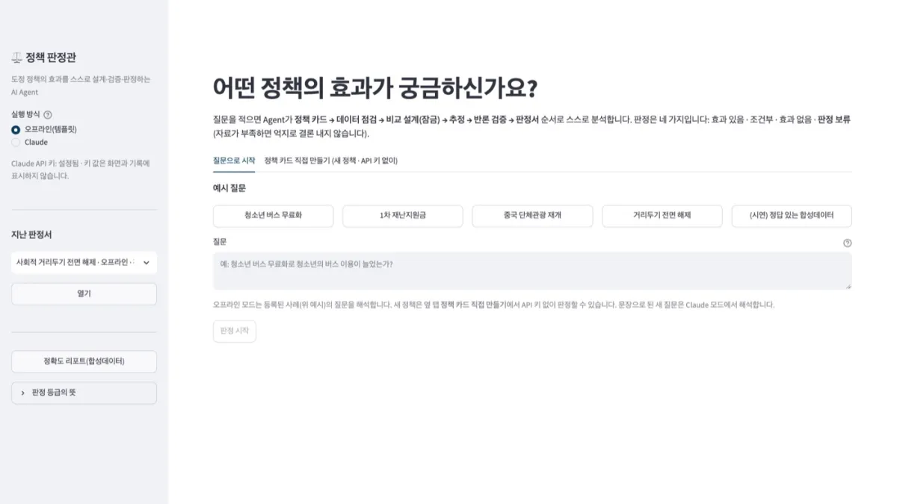
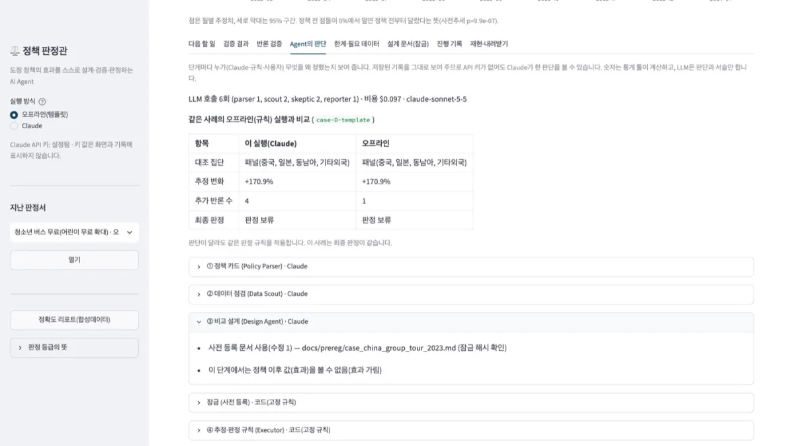
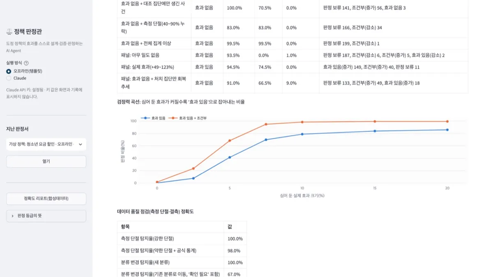

숫자는 코드가, 말은 LLM이 맡게 했습니다
모든 수치는 결정론적 코드가 계산하고, LLM은 설계 판단과 반론, 서술만 합니다.LLM이 쓴 판정서에 계산 결과에 없는 숫자가 있으면 다시 쓰게 했습니다.
구현 추정, 검증, 판정은 자체 인과 엔진 (
jverdict.causal), 판정서는 숫자 대조 검사 후 확정Project · 인과추론 AI Agent
제주도 정책이 정말 효과가 있었는지, 분석을 스스로 설계하고 검증한 뒤 판정하는 인과추론 AI Agent입니다.
2026 제주 AI·빅데이터 활용 AI Agent 개발 챌린지 출품작

사례를 고르면 먼저 시행 전후 숫자만 비교한 결론이 나옵니다. 그다음 판정관에게 물어보세요.
단순 전후 비교
정책 판정관
이 숫자를 그대로 믿어도 될까요?
실제 판정관 화면은 웹 데모에서 열 수 있습니다. 처음 열 때 30~60초 걸릴 수 있습니다. 공개 데모에는 원자료 재배포 조건을 확인하지 못해 실데이터를 싣지 않았고, 기록된 판정서와 합성데이터 판정을 볼 수 있습니다.
웹 데모 새 탭에서 열기사례와 수치는 저장소 README와 결과 설명자료(2026-11-09 실행 기준)에 기록된 판정을 그대로 옮겼고, 이 페이지에서 새로 계산하지 않습니다. 단계 진행은 실제 판정 순서를 보여 주는 재생이며, 걸린 단계 표시는 기록된 판정 근거를 따릅니다.
Problem
정책 효과를 보고하기 전에, 그 숫자가 정책 효과인지 확인합니다.
질의 전에 “늘었다, 줄었다”가 사실인지 확인합니다.
과업지시서에 비교 집단과 필요한 기간을 미리 반영합니다.
정책 판정 서비스를 운영하고, 공개 데이터 품질을 감시합니다.
How it judges
순서는 코드가 고정해서 단계를 건너뛸 수 없습니다. Claude는 판단과 서술을, 코드는 계산을 맡습니다.
| 단계 | 담당 | 하는 일 |
|---|---|---|
| ① 정책 카드 | Claude · Policy Parser | 질문이나 보도자료를 정책, 시행일, 대상으로 정리하고, 사람이 한 번 확인합니다. |
| ② 데이터 점검 | Claude · Data Scout | 측정 단절과 결측을 효과 추정보다 먼저 점검합니다. 측정 단절이 의심되면 판정 상한을 ‘판정 보류’로 고정합니다. |
| ③ 비교 설계 | Claude · Design Agent | 정책 전 유사도로 대조 집단과 기간, 방법을 고릅니다. 이 단계에서는 효과 값을 볼 수 없습니다. |
| 잠금 | 코드 | 설계를 SHA-256으로 잠그고, 바꾸면 기록을 남깁니다. 잠금 전에는 효과 추정 도구를 부를 수 없습니다. |
| ④ 추정, 판정 | 코드 (고정 규칙) | 모든 수치는 결정론적 통계 코드가 계산하고, 검증 6개를 거쳐 고정 규칙으로 판정합니다. |
| ⑤ 반론 검증 | Claude · Skeptic | 가짜 시행일, 같은 시기 다른 사건 같은 반론을 세워 결론을 다시 검증하고, 반론이 성립하면 판정을 낮춥니다. |
| ⑥ 판정서 | Claude · Reporter | 결재용 3줄 요약, 다시 판정할 시점, 자료 요청 공문 초안을 씁니다. 판정서 속 숫자가 계산 결과에 없으면 다시 쓰게 합니다. |


Design principles
혼자 만든 프로젝트라, 규칙은 문서보다 코드에 두는 쪽을 골랐습니다.
모든 수치는 결정론적 코드가 계산하고, LLM은 설계 판단과 반론, 서술만 합니다.LLM이 쓴 판정서에 계산 결과에 없는 숫자가 있으면 다시 쓰게 했습니다.
jverdict.causal), 판정서는 숫자 대조 검사 후 확정결과를 본 뒤 비교 대상을 고르면 원하는 결론에 맞춰 설계를 바꿀 수 있습니다.설계 단계의 도구는 시행일 이전 자료만 돌려주고, 설계는 SHA-256으로 잠근 뒤에야 효과를 추정할 수 있게 했습니다.
청소년 버스 무료화 뒤 청소년 승차가 76% 줄었지만, 정책 대상만 줄었고 다른 유형은 그대로였습니다.도 발표(하루 약 22,783건)와 공개 데이터(약 2,745건)도 8.3배 차이가 났습니다.그래서 품질 점검은 LLM이 부르지 않아도 코드가 반드시 실행하게 했습니다.
근거가 부족하면 억지로 결론을 내지 않고, 왜 결론을 낼 수 없는지와 무엇이 있으면 낼 수 있는지를 함께 냅니다.담당자가 바로 다음 행동을 할 수 있도록 자료 요청 공문 초안까지 붙였습니다.
중국 단체관광 사례를 본 뒤 ‘사전추세가 크게 깨지면 상한 보류’ 규칙을 보완했습니다.사후 변경이라서 이전 규칙의 판정을 판정서에 함께 적고, 규칙 변경 이력은 날짜와 함께 코드에 남겼습니다.
RULE_HISTORY)Verification
인과 판정 12개 시나리오를 200회씩 돌렸습니다.

같은 기록으로 다시 실행하면 수치, 판정, 판정서 문장이 모두 같았습니다. Claude 실행은 저장한 응답 기록으로 API 없이 재실행합니다.
인과 엔진, 품질 점검, 설계 잠금, 판정 규칙을 자동 시험으로 묶었습니다.
오프라인(규칙) 모드로 같은 판정 규칙과 수치를 재현할 수 있습니다.
Stack
Python 3.14, Streamlit, Claude API (역할별 Agent: Parser, Scout, Design, Skeptic, Reporter)
이중차분(DiD), 단절 시계열(ITS), 플라시보 검정, 검정력 분석을 담은 자체 인과 엔진
pytest 자동 시험 139개, 설계 잠금(SHA-256), 재실행 대조
제주데이터허브 공개 데이터 (버스 승차, 카드 소비 등), 정답을 심은 합성데이터
Next
공개 데이터는 월 단위, 단일 카드사처럼 해상도가 낮아 작은 효과를 가리기 어렵습니다.그래서 판정서마다 구분할 수 있는 최소 효과를 함께 보고하고, 일 단위 자료 연계를 다음 과제로 두었습니다.합성통제, 회귀불연속 같은 추정 방법과 읍면동 단위의 지역 정책 판정도 확장 계획에 있습니다.평행추세 같은 인과 가정은 검정으로 완전히 증명할 수 없어서, 판정서마다 ‘이 분석이 말할 수 없는 것’을 적습니다.
More projects